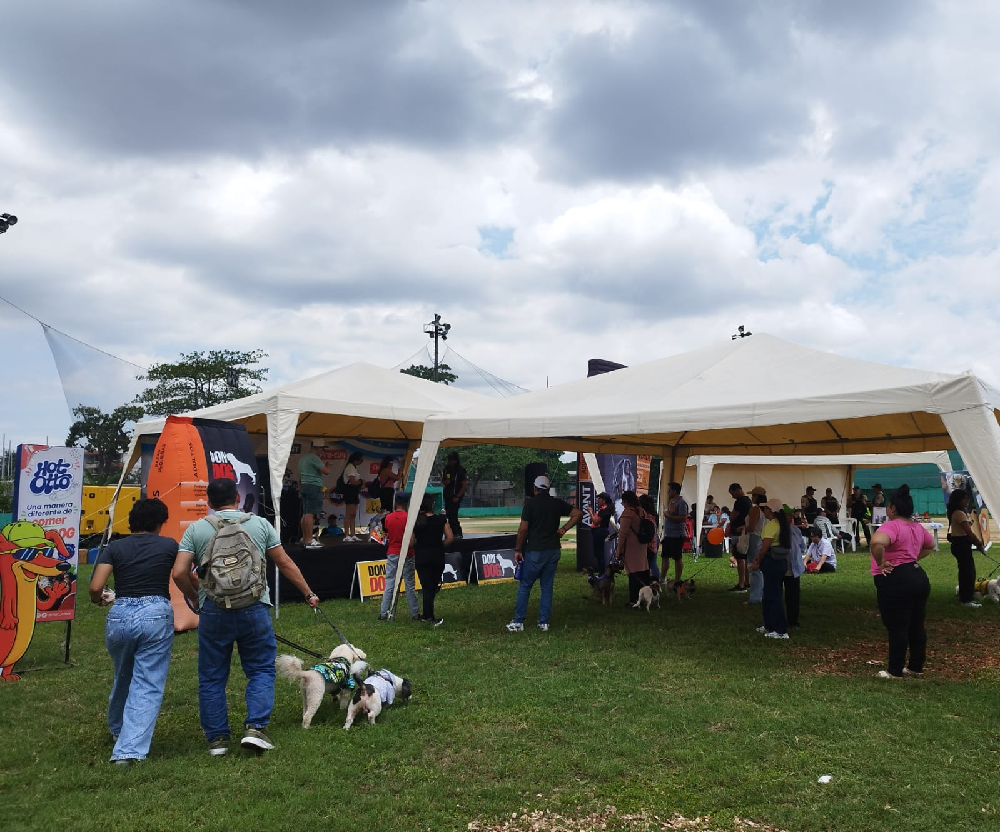

Concursos y Dinámicas
Integración familiar, destreza y celebración animal en el Parque La Kennedy.

Festivanimal convocó a decenas de familias guayaquileñas junto a sus fieles compañeros en la cancha de béisbol detras del Parque de La Kennedy. Durante la jornada, el evento se consolidó como un punto de encuentro comunitario dedicado a fomentar el respeto, la tenencia responsable y el bienestar animal en en un ambiente festivo. Los asistentes disfrutaron de un cronograma lleno de concursos interactivos, espacios de recreación al aire libre y exhibiciones que fortalecieron los lazos de afecto y convivencia ciudadana en honor a las fiestas octubrinas.
Guayaquil Tiene Talento
Este certamen reunió a las mascotas más hábiles y disciplinadas del festival en una demostración abierta frente a todo el público asistente. Dueños y perritos presentaron rutinas individuales de obediencia básica, reflejos rápidos, saltos cronometrados y trucos aprendidos mediante entrenamiento positivo guiado en casa. Un jurado calificado se encargó de puntuar la conexión, el carisma escénico y la dificultad técnica de cada presentación.
Bailando con tu Peludito
Una de las actividades más divertidas y aplaudidas de la tarde fue el concurso de baile en parejas entre dueños y sus mascotas sobre la tarima del evento. Los participantes prepararon coreografías al ritmo de distintos géneros musicales, coordinando pasos, giros y movimientos sincronizados con sus perritos frente a los asistentes del evento. La marca Premier Pet encabezó la premiación de esta categoría, evaluando la coordinación, comodidad del animal durante el espectáculo y la complicidad demostrada en el escenario, entregando premios especiales para el cuidado integral de cada concursante.
El Rescatadito Guayaquileño más Guapo
El desfile representó el corazón comunitario y emotivo de Festivanimal, al rendir homenaje a la labor de rescate y a las segundas oportunidades de vida. Decenas de perritos mestizos y rescatados que hoy cuentan con un hogar definitivo caminaron por la pasarela principal con orgullo por sus familias adoptivas. Cada dueño, compartió una breve historia sobre el proceso de recuperación y adopción de su compañero, conmoviendo al público e inspirando a los presentes a sumarse activamente a la adopción responsable y avalorar el trabajo diaro de las fundaciones de protección animal.